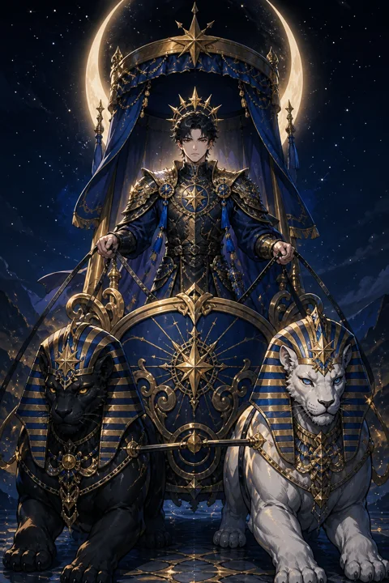

이 게시물은 쿠팡 파트너스 활동의 일환으로, 이에 따른 일정액의 수수료를 제공받습니다.


VII 전차 카드 — 의지로 이끄는 추진력과 승리
전차 카드 한눈에 보기
전차 카드 상징 읽기

동네보살의 카드 그림은 전통 라이더–웨이트 덱의 뜻을 새 그림으로 옮긴 것입니다. 아래 상징 설명은 전통 덱의 그림을 기준으로 합니다.
전차 카드의 주인공은 갑옷을 입고 별 무늬 천막 아래 전차에 선 채 앞을 똑바로 바라봅니다. 천막의 별은 하늘의 뜻이 이 여정을 비춘다는 의미이고, 곧은 자세는 흔들림 없는 결단을 보여 줍니다.
전차를 끄는 것은 말이 아니라 검은 스핑크스와 흰 스핑크스입니다. 서로 다른 방향으로 가려는 두 힘, 이성과 감정 또는 욕망과 절제를 하나로 모아야 한다는 뜻입니다.
눈여겨볼 점은 그가 고삐를 쥐고 있지 않다는 것입니다. 손이 아닌 의지로 두 힘을 다스린다는 상징입니다. 뒤로 보이는 성벽 도시는 떠나온 안전한 곳이고, 그 앞의 강은 이미 건너온 장애물을 나타냅니다.
갑옷 어깨에 새겨진 초승달 두 개는 변하는 감정 속에서도 중심을 지키는 힘을, 가슴의 네모 무늬는 땅에 뿌리내린 현실 감각을 뜻합니다. 머리에 쓴 별 왕관은 목표를 향한 뚜렷한 의식입니다. 전차 앞면에 새겨진 날개 달린 원은 한계를 넘어 높이 오르려는 정신을 보여 줍니다.
전차 카드 정방향 뜻
정방향 전차는 목표가 분명하고 에너지가 최고조에 오른 상태를 뜻합니다. 망설이던 일이 있다면 지금은 멈추지 말고 앞으로 나아갈 때입니다. 경쟁, 시험, 도전 과제처럼 이겨 내야 하는 상황에서 특히 힘이 실립니다.
이 카드가 말하는 승리는 운이 아니라 자기 통제에서 나옵니다. 흔들리는 감정과 흩어지는 욕심을 하나의 방향으로 묶어 낼 때 속도가 붙습니다. 마음속에서 두 가지 목소리가 싸우고 있다면 둘 중 하나를 없애기보다 둘 다 목표를 위해 쓰는 방법을 찾아보세요.
이동, 출장, 이사처럼 실제로 자리를 옮기는 일과도 잘 맞습니다. 가야 할 곳을 정했다면 주변의 소음에 흔들리지 말고 시선을 앞에 고정하세요. 주변의 반대나 예상치 못한 방해가 있더라도 흔들리지 않는 태도가 오히려 사람들의 지지를 불러옵니다. 한 번 얻은 승리의 경험은 다음 도전을 이어 갈 자신감의 연료가 됩니다.
전차 카드 역방향 뜻
역방향 전차는 속도는 붙었는데 핸들을 놓친 모습입니다. 목표 없이 바쁘기만 하거나, 이기고 싶은 마음이 앞서 주변을 살피지 못하고 밀어붙이는 흐름이 나타날 수 있습니다.
반대로 두 스핑크스가 서로 다른 방향으로 끌어당겨 전차가 제자리에서 멈춰 선 상태를 뜻하기도 합니다. 하고 싶은 일과 해야 할 일 사이에서 힘이 갈라져 아무것도 진행되지 않는 답답함이지요. 뜻대로 되지 않는 일에 좌절감이 커질 수도 있습니다.
이 카드는 멈추라는 명령이 아니라 방향을 다시 확인하라는 신호입니다. 잠시 속도를 늦추고 내가 정말 어디로 가려는지 적어 보세요. 목적지가 분명해지면 흩어졌던 힘은 다시 한 줄로 섭니다. 계속 달려오느라 지쳤다면 지금의 정체는 몸과 마음이 보내는 휴식 요청일 수도 있습니다. 잠깐 멈추는 것은 패배가 아니라 다음 질주를 위한 정비입니다.
연애에서 전차 카드
솔로라면 마음에 드는 사람에게 적극적으로 다가갈 용기가 생기는 시기입니다. 주저하던 고백이나 만남 제안을 실행에 옮기기 좋은 흐름이며, 당당하고 자신감 있는 태도가 매력으로 비칩니다. 다만 상대의 반응을 살피지 않고 혼자 앞서가면 부담을 줄 수 있습니다.
연애 중이라면 관계를 앞으로 끌고 가려는 힘이 강해집니다. 함께 목표를 세우고 이루어 가는 과정에서 결속이 단단해집니다. 그러나 한 사람이 주도권을 쥐고 결정을 몰아붙이면 이기고도 마음을 잃을 수 있습니다. 서로의 속도를 확인하며 나란히 달리는 것이 이 카드가 말하는 진짜 승리입니다. 솔로인 사람이라면 연애를 하나의 목표처럼 몰아붙이기보다 설렘이 자랄 틈을 남겨 두는 것이 좋습니다. 연애 중인 경우 이사나 장거리 같은 변화를 함께 헤쳐 나가며 한 팀이라는 감각이 커지는 시기이니, 어려움이 생기면 누가 이기느냐보다 둘이 어디로 가느냐를 먼저 이야기해 보세요.
재회·속마음 질문에서 전차 카드
재회 질문에서 전차가 나오면 당신이 적극적으로 움직일 때 상황이 바뀔 수 있다는 뜻입니다. 상대는 자기 삶의 목표를 향해 바쁘게 달리고 있어 감정을 돌아볼 여유가 부족할 수 있습니다. 밀어붙이면 한순간 가까워질 수 있지만 상대의 속도를 무시하면 다시 멀어집니다. 분명한 의지를 보이되 선택할 시간은 상대에게 남겨 두세요. 만약 이별의 원인이 한쪽의 일방적인 속도였다면 이번에는 그 속도를 조절하겠다는 약속이 필요합니다. 짧은 기간 안에 답을 받아 내려 하면 상대는 부담을 느끼고 물러설 수 있습니다. 당신이 자신의 삶을 힘차게 꾸려 가는 모습 자체가 상대의 마음을 움직이는 가장 자연스러운 신호가 됩니다.
일·금전에서 전차 카드
일에서는 추진력이 최고조에 오르는 시기입니다. 미뤄 왔던 목표를 밀어붙이거나 경쟁에서 앞서 나갈 기회가 많고, 승진이나 성과 평가에서 좋은 결과를 기대할 만한 흐름입니다. 업무량이 많아도 우선순위를 분명히 정하면 빠르게 처리해 낼 수 있습니다.
금전 면에서는 목표 금액과 기간을 정해 두고 꾸준히 밀고 가는 태도가 힘을 발휘합니다. 다만 기세가 오를 때일수록 무리한 결정을 내리기 쉬우니 속도를 내기 전에 방향과 한도를 먼저 점검하세요. 이기려는 마음보다 끝까지 통제력을 잃지 않는 것이 더 중요합니다. 여러 부서나 이해관계가 엇갈리는 일을 맡았다면 서로 다른 요구를 하나의 목표로 묶어 내는 조율 능력이 성과를 가릅니다. 출장이나 외근처럼 움직임이 많은 업무에서도 좋은 흐름이 이어집니다.
전차 카드는 예일까 아니오일까
목표를 향해 힘차게 나아가는 카드라서 밀고 나갈지를 묻는 질문에는 긍정으로 봅니다. 역방향이면 속도에 비해 방향이나 통제가 부족하다는 뜻이라, 계획을 다시 잡은 뒤에 움직이라는 조건부로 바뀝니다.
자주 묻는 질문
전차 카드 역방향은 나쁜 뜻인가요?
역방향 전차는 속도는 붙었는데 핸들을 놓친 모습입니다. 목표 없이 바쁘기만 하거나, 이기고 싶은 마음이 앞서 주변을 살피지 못하고 밀어붙이는 흐름이 나타날 수 있습니다.
전차 카드가 연애 질문에 나오면요?
솔로라면 마음에 드는 사람에게 적극적으로 다가갈 용기가 생기는 시기입니다. 주저하던 고백이나 만남 제안을 실행에 옮기기 좋은 흐름이며, 당당하고 자신감 있는 태도가 매력으로 비칩니다. 다만 상대의 반응을 살피지 않고 혼자 앞서가면 부담을 줄 수 있습니다.
타로 카드는 어떻게 뽑나요?
타로 카드 페이지에서 78장을 섞으면 그중 22장이 펼쳐집니다. 마음이 가는 세 장을 고르면 과거·현재·미래 자리에 놓이고, 한 장씩 뒤집어 자리와 방향에 맞는 풀이를 읽습니다. 정방향과 역방향은 섞는 순간 정해집니다.